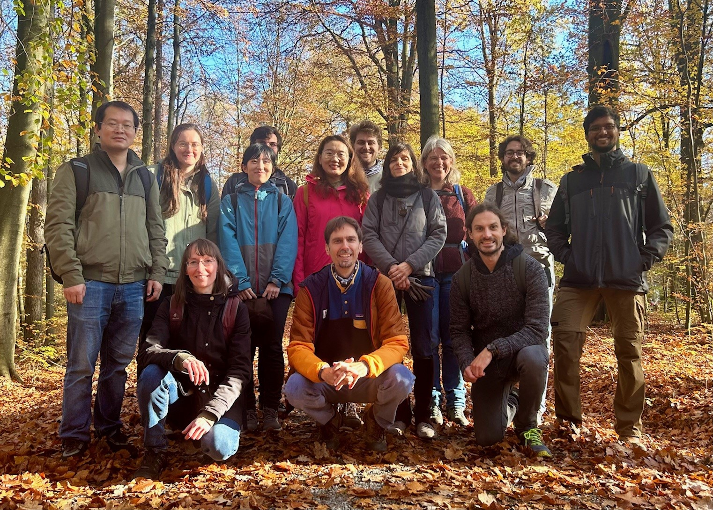

We investigate the organization and function of cell interfaces across scales.

Tight Junction Cortex Reconstitution (Sun 2025)
We combine molecular reconstitutions with quantitative microscopy to study cell interfaces from the bottom up and in living tissues.

Our Team: Lab retreat November 2024